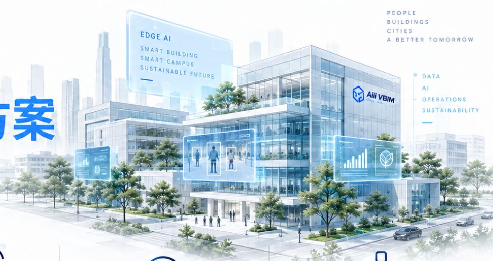

AI that doesn’t just see the data — it understands your site and helps you decide.
Healthcare, manufacturing, critical infrastructure and large enterprises often need low latency, network resilience and protection for sensitive data. Aiii Edge AI deploys inference, document Q&A and AI agents on-site, directly connected to VBIM’s spatial, equipment, video and energy data.
Request an Edge AI assessment →
Aiii VBIM brings AI into the building — planning AI compute, memory, storage, networking and cooling from the design stage, for an AI-Ready Building solution that can be designed in.
| Capability | Use | Value |
|---|---|---|
| {{c.n}} | {{c.u}} | {{c.v}} |